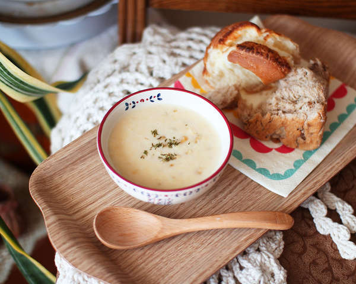

Corn Soup

for 4 people
Tool
Fryingpan, Mixer
time
20m
Kcal
360kcal
Ingredients
1 Canned corn
2½ tablespoon Wheat
2½ cups=500 ml Milk
⅛ tablespoon Salt
Recipe
Put butter (2 ½ tablespoons) in a pan, melt it on a medium heat, add flour (2 ½ tablespoon) and fry for about 1 minute.
It's easy to burn. You have to fry it with a spatula.
After removing the water from the canned corn, put only the kernel and fry for about 1 minute.
Spread the milk (2 ½ cups = 500 ml) in three or four portions. It can be lumpy, so you have to pour it several times
If it is mixed well, turn off the light for a while, bring out half of the corn in the mixer, put it in t he mixer and pour it together with about 1 cup of milk.
Pour it back into the pan, stir it in the middle of the fire and boil it to thicken it.
When boiling, go to salt (⅛ tablespoon) and turn off the fire.
 TipIt is more delicious than eating bread with dipping!